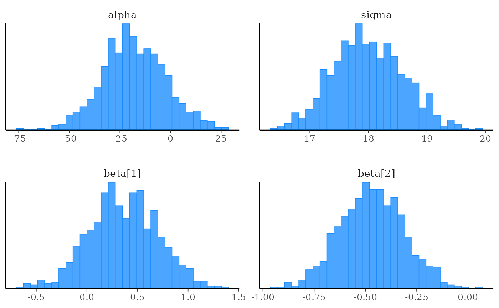
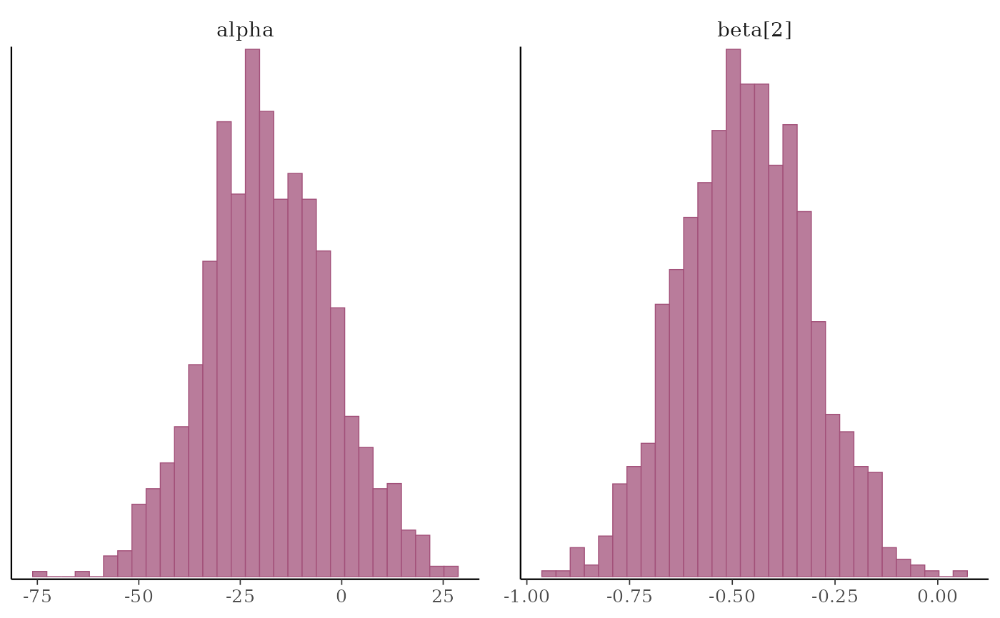
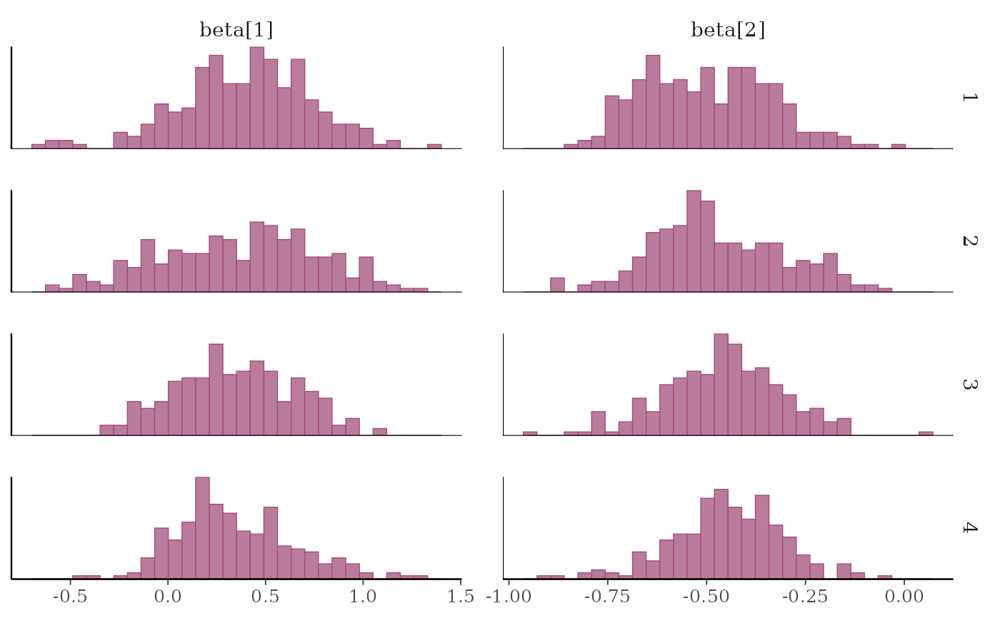
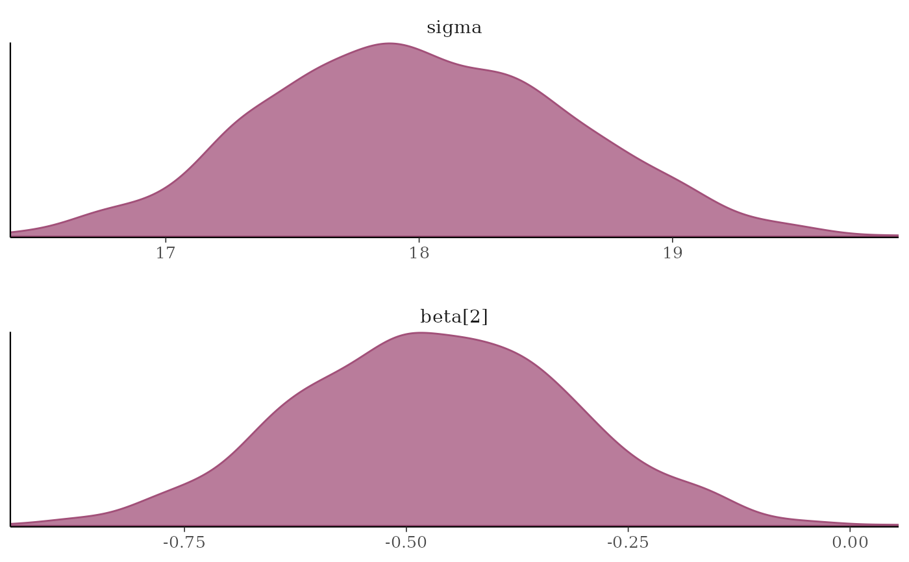
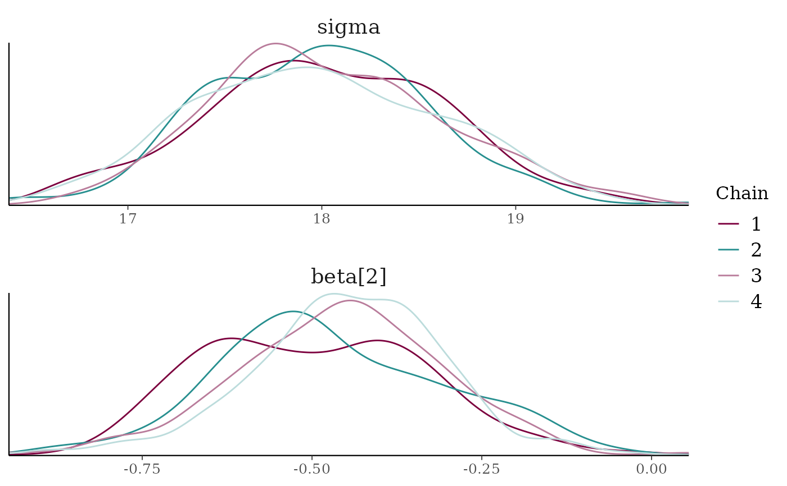
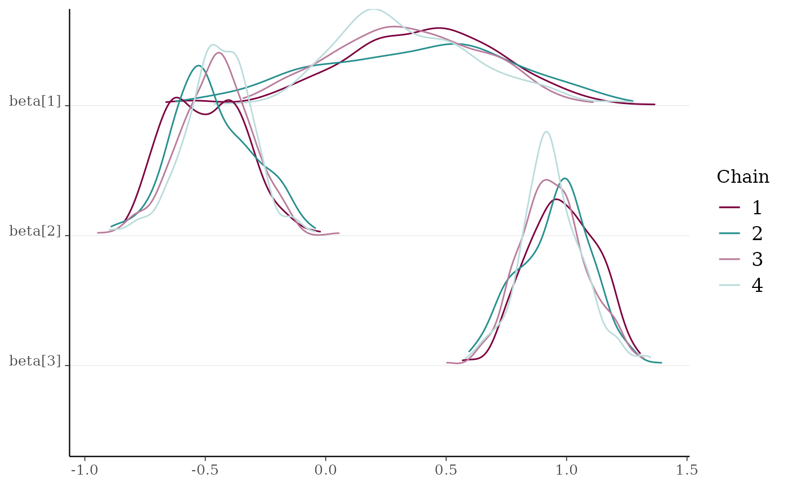
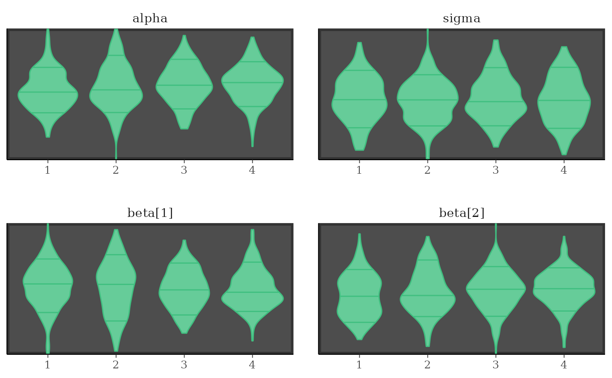

Histograms and kernel density plots of MCMC draws
Source:R/mcmc-distributions.R
MCMC-distributions.RdVarious types of histograms and kernel density plots of MCMC draws. See the Plot Descriptions section, below, for details.
Usage
mcmc_hist(
x,
pars = character(),
regex_pars = character(),
transformations = list(),
...,
facet_args = list(),
binwidth = NULL,
bins = NULL,
breaks = NULL,
freq = TRUE,
alpha = 1
)
mcmc_dens(
x,
pars = character(),
regex_pars = character(),
transformations = list(),
...,
facet_args = list(),
trim = FALSE,
bw = NULL,
adjust = NULL,
kernel = NULL,
n_dens = NULL,
alpha = 1
)
mcmc_hist_by_chain(
x,
pars = character(),
regex_pars = character(),
transformations = list(),
...,
facet_args = list(),
binwidth = NULL,
bins = NULL,
freq = TRUE,
alpha = 1
)
mcmc_dens_overlay(
x,
pars = character(),
regex_pars = character(),
transformations = list(),
...,
facet_args = list(),
color_chains = TRUE,
trim = FALSE,
bw = NULL,
adjust = NULL,
kernel = NULL,
n_dens = NULL
)
mcmc_dens_chains(
x,
pars = character(),
regex_pars = character(),
transformations = list(),
...,
color_chains = TRUE,
bw = NULL,
adjust = NULL,
kernel = NULL,
n_dens = NULL
)
mcmc_dens_chains_data(
x,
pars = character(),
regex_pars = character(),
transformations = list(),
...,
bw = NULL,
adjust = NULL,
kernel = NULL,
n_dens = NULL
)
mcmc_violin(
x,
pars = character(),
regex_pars = character(),
transformations = list(),
...,
facet_args = list(),
probs = c(0.1, 0.5, 0.9)
)Arguments
- x
An object containing MCMC draws:
A 3-D array, matrix, list of matrices, or data frame. The MCMC-overview page provides details on how to specify each these.
A
drawsobject from the posterior package (e.g.,draws_array,draws_rvars, etc.).An object with an
as.array()method that returns the same kind of 3-D array described on the MCMC-overview page.
- pars
An optional character vector of parameter names. If neither
parsnorregex_parsis specified then the default is to use all parameters. As of version1.7.0, bayesplot also supports 'tidy' parameter selection by specifyingpars = vars(...), where...is specified the same way as in dplyr::select(...) and similar functions. Examples of usingparsin this way can be found on the Tidy parameter selection page.- regex_pars
An optional regular expression to use for parameter selection. Can be specified instead of
parsor in addition topars. When usingparsfor tidy parameter selection, theregex_parsargument is ignored since select helpers perform a similar function.- transformations
Optionally, transformations to apply to parameters before plotting. If
transformationsis a function or a single string naming a function then that function will be used to transform all parameters. To apply transformations to particular parameters, thetransformationsargument can be a named list with length equal to the number of parameters to be transformed. Currently only univariate transformations of scalar parameters can be specified (multivariate transformations will be implemented in a future release). Iftransformationsis a list, the name of each list element should be a parameter name and the content of each list element should be a function (or any item to match as a function viamatch.fun(), e.g. a string naming a function). If a function is specified by its name as a string (e.g."log"), then it can be used to construct a new parameter label for the appropriate parameter (e.g."log(sigma)"). If a function itself is specified (e.g.logorfunction(x) log(x)) then"t"is used in the new parameter label to indicate that the parameter is transformed (e.g."t(sigma)").Note: due to partial argument matching
transformationscan be abbreviated for convenience in interactive use (e.g.,transform).- ...
Currently ignored.
- facet_args
A named list of arguments (other than
facets) passed toggplot2::facet_wrap()orggplot2::facet_grid()to control faceting. Note: ifscalesis not included infacet_argsthen bayesplot may usescales="free"as the default (depending on the plot) instead of the ggplot2 default ofscales="fixed".- binwidth
Passed to
ggplot2::geom_histogram()to override the default binwidth.- bins
Passed to
ggplot2::geom_histogram()to override the default binwidth.- breaks
Passed to
ggplot2::geom_histogram()as an alternative tobinwidth.- freq
For histograms,
freq=TRUE(the default) puts count on the y-axis. Settingfreq=FALSEputs density on the y-axis. (For many plots the y-axis text is off by default. To view the count or density labels on the y-axis see theyaxis_text()convenience function.)- alpha
Passed to the geom to control the transparency.
- trim
A logical scalar passed to
ggplot2::geom_density().- bw, adjust, kernel, n_dens
Optional arguments passed to
stats::density()to override default kernel density estimation parameters.n_densdefaults to1024.- color_chains
Option for whether to separately color chains.
- probs
A numeric vector passed to
ggplot2::geom_violin()'sdraw_quantilesargument to specify at which quantiles to draw horizontal lines. Set toNULLto remove the lines.
Plot Descriptions
mcmc_hist()Histograms of posterior draws with all chains merged.
mcmc_dens()Kernel density plots of posterior draws with all chains merged.
mcmc_hist_by_chain()Histograms of posterior draws with chains separated via faceting.
mcmc_dens_overlay()Kernel density plots of posterior draws with chains separated but overlaid on a single plot.
mcmc_violin()The density estimate of each chain is plotted as a violin with horizontal lines at notable quantiles.
mcmc_dens_chains()Ridgeline kernel density plots of posterior draws with chains separated but overlaid on a single plot. In
mcmc_dens_overlay()parameters appear in separate facets; inmcmc_dens_chains()they appear in the same panel and can overlap vertically.
Examples
set.seed(9262017)
# some parameter draws to use for demonstration
x <- example_mcmc_draws()
dim(x)
#> [1] 250 4 4
dimnames(x)
#> $Iteration
#> NULL
#>
#> $Chain
#> [1] "chain:1" "chain:2" "chain:3" "chain:4"
#>
#> $Parameter
#> [1] "alpha" "sigma" "beta[1]" "beta[2]"
#>
##################
### Histograms ###
##################
# histograms of all parameters
color_scheme_set("brightblue")
mcmc_hist(x)
#> `stat_bin()` using `bins = 30`. Pick better value `binwidth`.

# histograms of some parameters
color_scheme_set("pink")
mcmc_hist(x, pars = c("alpha", "beta[2]"))
#> `stat_bin()` using `bins = 30`. Pick better value `binwidth`.

# \donttest{
mcmc_hist(x, pars = "sigma", regex_pars = "beta")
#> `stat_bin()` using `bins = 30`. Pick better value `binwidth`.
# }
# example of using 'transformations' argument to plot log(sigma),
# and parsing facet labels (e.g. to get greek letters for parameters)
mcmc_hist(x, transformations = list(sigma = "log"),
facet_args = list(labeller = ggplot2::label_parsed)) +
facet_text(size = 15)
#> `stat_bin()` using `bins = 30`. Pick better value `binwidth`.
# \donttest{
# instead of list(sigma = "log"), you could specify the transformation as
# list(sigma = log) or list(sigma = function(x) log(x)), but then the
# label for the transformed sigma is 't(sigma)' instead of 'log(sigma)'
mcmc_hist(x, transformations = list(sigma = log))
#> `stat_bin()` using `bins = 30`. Pick better value `binwidth`.
# separate histograms by chain
color_scheme_set("pink")
mcmc_hist_by_chain(x, regex_pars = "beta")
#> `stat_bin()` using `bins = 30`. Pick better value `binwidth`.

# }
#################
### Densities ###
#################
mcmc_dens(x, pars = c("sigma", "beta[2]"),
facet_args = list(nrow = 2))

# \donttest{
# separate and overlay chains
color_scheme_set("mix-teal-pink")
mcmc_dens_overlay(x, pars = c("sigma", "beta[2]"),
facet_args = list(nrow = 2)) +
facet_text(size = 14)

x2 <- example_mcmc_draws(params = 6)
mcmc_dens_chains(x2, pars = c("beta[1]", "beta[2]", "beta[3]"))

# }
# separate chains as violin plots
color_scheme_set("green")
mcmc_violin(x) + panel_bg(color = "gray20", size = 2, fill = "gray30")
#> Warning: The `size` argument of `element_rect()` is deprecated as of ggplot2 3.4.0.
#> ℹ Please use the `linewidth` argument instead.
#> ℹ The deprecated feature was likely used in the bayesplot package.
#> Please report the issue at <https://github.com/stan-dev/bayesplot/issues/>.
